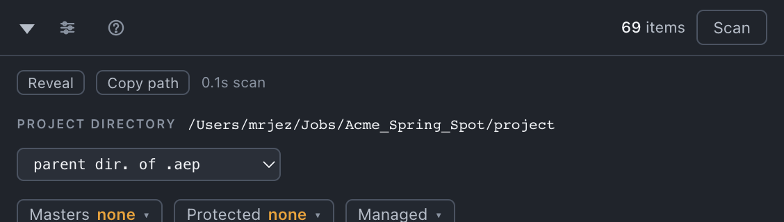

Set up each project
Four settings in the panel header, each of which changes what several tools do. Five minutes when you open a job; the rest of the panel then does the right thing.
Everything on this page lives in the header — the row opened with the chevron, which shows the project directory — and the strip under it with Masters, Protected and Managed.

Save the project first
The disk tools measure from where the .aep lives. An unsaved project has no path, so Gather, Sort disk and Collect refuse with Save the project first — where its files belong is measured from where it lives.
The project directory
What it is. The directory everything on disk is measured from: what counts as inside the project, what Gather and Sort disk will move, where the default <project>/render folder resolves, and how far Update assets looks.
How Toolbox guesses it. If the .aep sits in a folder named like a project-file folder — aep, aeps, ae, project, projects, with or without a leading underscore — the project directory is that folder's parent. Otherwise the folder holding the .aep is the project directory. It never climbs past a volume or your home folder.
How to check and correct it. The dropdown beside the path says how it was decided — the .aep's directory, parent dir. of .aep, guessed, or set by you — and its second option, set manually…, opens a chooser titled Where does this project live? The correction is remembered against the project file, so it follows the project rather than the machine. Changing it re-classifies every stray immediately.
Reveal opens it in the Finder; Copy path copies it.
Managed or Unmanaged
The Managed ▾ button, beside Masters and Protected in Project, and in the identity row in Render and Import.
The rule in one line: Managed means Toolbox may shape this directory. Unmanaged means this project lives inside somebody else's structure — a larger job folder with footage anywhere in it, a pipeline that arranges files its own way — and Toolbox should not rearrange anything on disk here.
Managed is the default and is how every project behaved before the switch existed. The setting is per directory, not per project: it applies to every .aep under the directory you name, and a managed project nested inside an unmanaged job tree can say so with a deeper entry.
Switching opens a sheet rather than flipping a toggle, because it changes behaviour for every project under a directory. It states what changes and asks for the job directory — the folder that holds the whole job, which is what "inside" is measured from once unmanaged.
| Managed | Unmanaged | |
|---|---|---|
| Sort disk | works | off, and says why |
| Gather | files strays into the project by your disk template | asks where files should go (Into), copies them there flat, and can take a selection |
| Render | defaults to <project>/render | no default — pick a destination |
| Stray footage | anything outside the project directory | anything outside the job directory |
| Project panel tools | unchanged | unchanged |
The switch is about disk only. Organize, Rename, Reduce, Unused, Resize and every other tool that works inside the After Effects project behave the same either way.
Masters
What they are. The comps that are the point of the project — the deliverables. Toolbox stores the tag as [MASTER] in the comp's Comment, so it travels with the project, shows in the Project panel's Comment column, survives Collect Files, and can be read or removed by hand on a machine without Toolbox.
How to declare them. Select the comps in the Project panel, open Masters ▾ in the header, press + add selected. Each master shows as a chip with an × to remove it. Only comps count; a [MASTER] on a folder or footage is ignored. A comp in the render queue is not a master.
Why it is the single most consequential step. Unused means not reachable from a master. Until you have said which comps matter, a comp with nothing above it looks exactly like the one you deliver — so Toolbox refuses to guess:
| Tool | With no masters | With masters |
|---|---|---|
| Organize | files nothing as unused; top-level comps go to comps | files comps nothing uses to comps/other |
| Unused | removes footage and solids only — no comps, and says so | removes comps nothing references |
| Reduce | No masters declared — nothing to reduce to. | keeps the masters and everything they use |
| Collect | starts from your selection | starts from your masters when nothing is selected |
| Comp settings | cannot copy from a master | offers each master as a source to copy settings from |
| Number comps | counts depth from every top-level comp | counts depth from the masters |
The count on the button is deliberately never hidden. Masters none, in colour, is a state, not an empty list: on three real projects, running Unused without masters would have removed 30, 10 and 55 comps — including the master edit.
Protected
What it is. Anything tagged [KEEP] in its Comment — a comp, a footage item, a solid, or a folder, in which case everything under it at any depth is protected too. Same control as Masters: select, Protected ▾, + add selected. The button's number is the full protected count; the chips are the folders and items you tagged, each with its subtree count.
What it protects from — every verb. A protected item is never moved by Organize, Gather or Sort disk; never renamed by Rename or Number comps; excluded from Comp settings and Resize; spared by Unused, Reduce and Consolidate (even a byte-identical duplicate); not copied by Duplicate, which warns you the copy therefore points at the originals; and a protected folder survives the empty-folder sweep while empty. Collect keeps it and its subtree.
When to use it. A renders folder another tool manages, a reference folder, an incoming-client folder, a comp a colleague is still working in — anything you want every tool to walk around. For a folder you simply keep empty on purpose, the template's Always create list does the same job per template rather than per project.
What Toolbox remembers per project
Set where you use them, remembered against the job:
- the render destination — stored relative to the project directory when it is inside one, so a moved project keeps rendering into itself;
- Relink's search directory — so opening a second project and pressing Relink does not search the first project's plates;
- Render's output module;
- which template this job uses, and Organize's scope choices.
The job is the directory plus the filename with version and copy markers stripped, so spot_v01.aep and spot_v02.aep in one directory share their settings and the panel says settings carried over from the previous name.